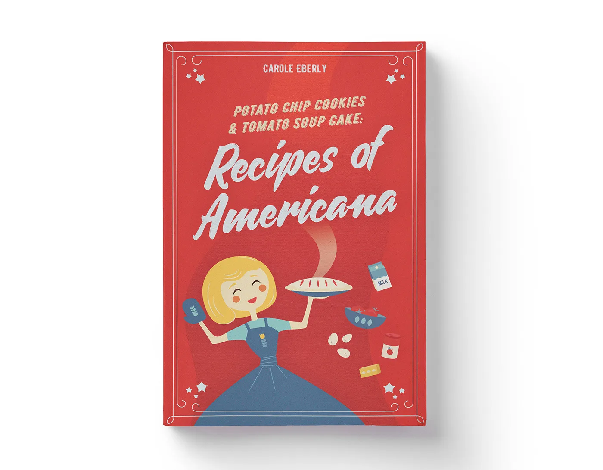
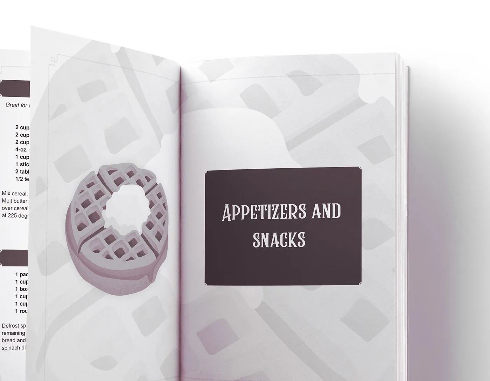
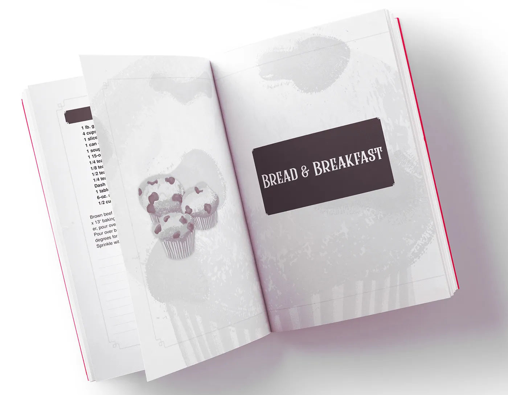
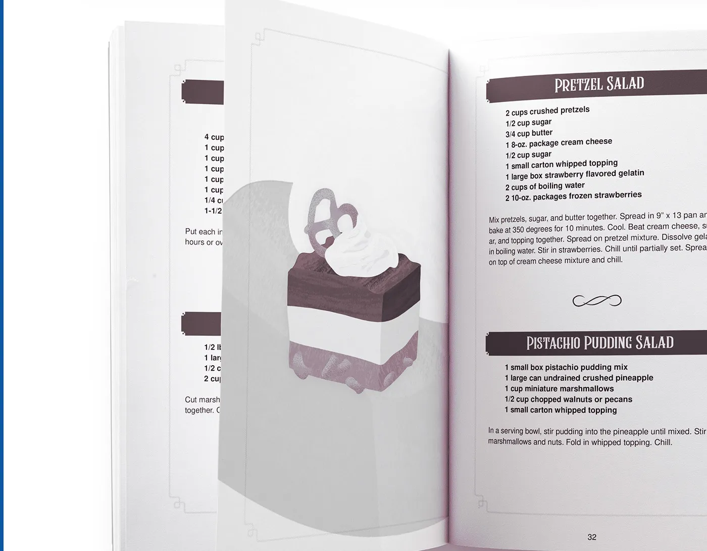
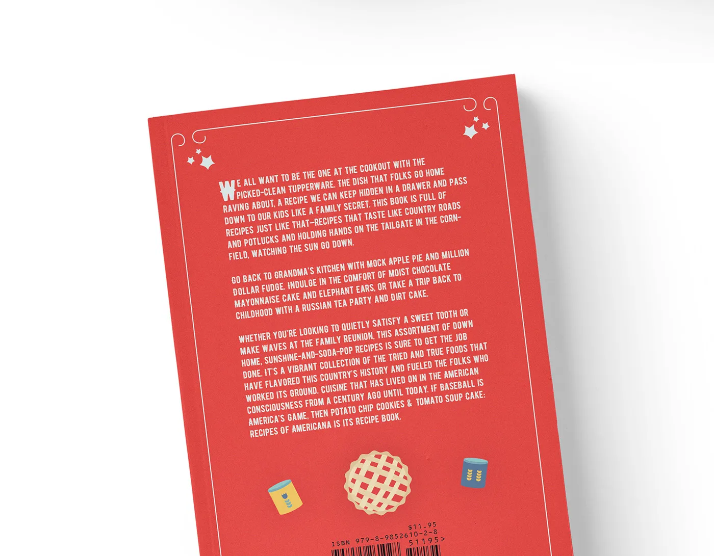

{{> scripts }} {{> header }} {{> project-info category="Book design" title="Recipes of Americana" client="Denali and Co." year="2024" description="A vintage-inspired cookbook design project featuring custom typesetting, bold red palettes, and old-fashioned Americana illustrations." }}





{{> back-button}} {{> portfolio }} {{> contact }} {{> footer }}